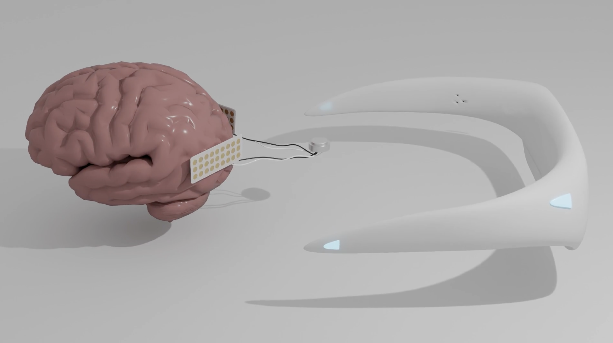
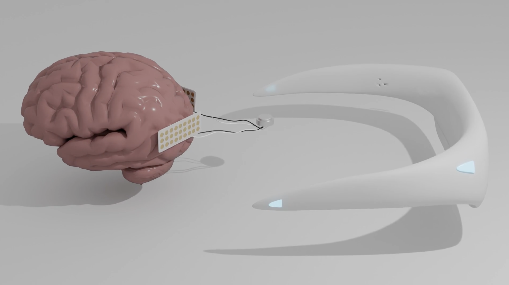

Welcome to Cortexa, a specialized surgical facility dedicated to the seamless integration of Drift into the human body. As neural-interface technologies become increasingly embedded in everyday life, Cortexa focuses on delivering a minimally invasive installation procedure designed for precision, safety, and rapid recovery. Drift is introduced through a micro-incision technique, guided by real-time imaging and assisted calibration systems that ensure optimal alignment with existing neural pathways. Beyond installation, Cortexa provides comprehensive post-operative diagnostics and performance monitoring. Our specialists conduct regular inspections to assess signal stability, tissue response, and adaptive synchronization, ensuring Drift continues to operate at peak efficiency. Through proactive maintenance protocols and personalized system adjustments, we safeguard both biological integrity and digital performance. Founded by a cross-disciplinary team of surgeons and systems engineers, Cortexa was established to redefine how advanced technologies become part of the human condition—responsibly, seamlessly, and accessibly.
 


Welcome to Cortexa, a specialized surgical facility dedicated to the seamless integration of Drift into the human body. As neural-interface technologies become increasingly embedded in everyday life, Cortexa focuses on delivering a minimally invasive installation procedure designed for precision, safety, and rapid recovery. Drift is introduced through a micro-incision technique, guided by real-time imaging and assisted calibration systems that ensure optimal alignment with existing neural pathways. Founded by a cross-disciplinary team of surgeons and systems engineers, Cortexa was established to redefine how advanced technologies become part of the human condition—responsibly, seamlessly, and accessibly.